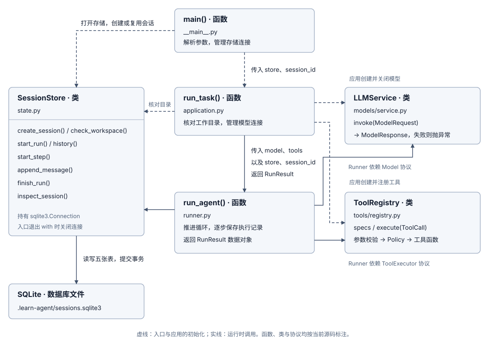

阶段 3A：会话与记录
1. 本轮要完成什么
先让 Agent 读取资料，退出程序后在同一会话追问。完成标准：历史消息和工具回执仍可查询，新问题能接上旧对话，任务状态与最终结果一起保存。当前实现是 3A：会话与记录；上下文预算与裁剪留到 3B。
2. 为什么选 SQLite
内存记录会随进程退出而丢失；JSONL 文件易查看，但关联查询和部分写入需要自行处理。当前选择 SQLite：一个本地文件即可保存关联记录，并用事务保证一组改动一起提交或回滚。存储方案的进一步比较见 Session / State。
3. 当前实现与完整例子
3.1 谁负责连接和调用
main() 打开 SessionStore，创建或复用会话；run_task() 检查工作目录，创建模型与工具；run_agent() 调用模型、执行工具，并通过 store 保存记录。退出时，入口关闭存储连接，应用关闭模型连接。Runner 是职责名称，当前实现是函数，不是一个类。
提供 --session 会话ID 时复用会话，每次提问仍创建新 Run；未提供时新建会话。不存在的会话或不一致的工作目录会报错。
查看当前函数与类的关系图

3.2 什么时候保存
一次会话（Session）可以有多个用户任务（Run）；一个任务可多次请求模型，每次请求及其工具回执属于一个步骤（Step）。messages.append(...) 只修改内存；下面的 store 调用才写入数据库：
| 时机 | 调用 | 保存内容 |
|---|---|---|
| 开始任务 | start_run() | 新增 Run、用户消息（step=0）和开始事件 |
| 每次请求模型前 | start_step() | 完整 ModelRequest 和请求事件 |
| 模型或工具返回后 | append_message() | 一条完整模型响应或工具回执，以及对应事件 |
| 任务结束 | finish_run() | 状态、结果或错误、结束时间和结束事件 |
每行中的保存内容在同一个事务里提交；模型和工具执行期间不保持一个长写事务。拒答、截断等模型响应也先保存，再由 Runner 判断是否停止。
3.3 五张表怎样关联
数据库位于项目根目录的 .learn-agent/sessions.sqlite3。把表当作 Excel 工作表：一行是一条记录，列是字段。下表列出全部字段；主键用于唯一确定一行，外键用来关联另一张表。建表源码见 SessionStore.__init__()。
| 表：一行表示什么 | 字段及含义 | 关联与排序 |
|---|---|---|
| sessions：一个会话 | id（会话 ID）、workspace（目录）、created_at（创建时间） | id 是主键 |
| runs：一次用户任务 | sequence（序号）、id（任务 ID）、session_id（会话 ID）、status（状态）、result/error（结果/错误）、created_at/finished_at（开始/结束时间） | sequence 是自增主键；id 唯一；session_id → sessions.id |
| steps：一次模型请求 | run_id（任务 ID）、number（步号）、request（完整请求）、created_at（记录时间） | (run_id, number) 是联合主键；run_id → runs.id |
| messages：一条消息 | sequence（序号）、run_id（任务 ID）、step（步号）、message（内容） | sequence 是自增主键；run_id → runs.id |
| events：一次进度事件 | sequence（序号）、run_id（任务 ID）、step（步号）、kind（类型）、data（补充数据）、created_at（记录时间） | sequence 是自增主键；run_id → runs.id |
sequence/number/step 是整数，其余列是文本。result/error/request/message/data 存 JSON 字符串，读取时再解析；JSON 内部字段不是表的新列。result 汇总最终回答与工具回执，request 保存消息、工具声明和输出上限，message 保存一条消息，data 通常是空对象，失败结束时包含错误。
为什么还要 events？messages 记录“说了什么、工具返回了什么”，steps 记录“每次准备发给模型什么”，runs 记录“任务当前是什么状态”。events 则把开始、请求、响应、工具返回和结束按顺序排成一条时间线，方便排查任务停在哪一步。没有它也能实现历史追问，只是查看过程时需要从其他表拼出这些节点；本项目选择单独记录，代价是多存一些与其他表重复的信息。
例如第一次请求模型就超时：事件顺序是 run_started → model_requested → run_failed，失败事件的 data 保存错误码和说明。这表示请求已保存，但没有模型响应被保存；可以根据 run_id 和步号去 steps 查当时的输入。model_requested 不证明远端已收到请求。当前通过 --show-session 的 runs[].events 查看这些记录，events 不进入模型上下文，也没有用于自动恢复执行。各事件的含义见 Session / State 的当前事件清单。
必要约束与保存细节
Run 状态只有 running、completed、failed；同一会话最多有一个 running 的任务。start_run 先取得写锁再检查，数据库也用条件唯一索引限制并发。各表的 sequence 独立增长，history 按任务序号、消息序号排序，不按随机 ID 排序。
steps.number 从 1 开始；用户最初的消息和运行开始/结束事件使用 step=0。messages.step、events.step 没有指向 steps 的外键。时间存为 UTC 文本；runs.result、error、finished_at 可以为 NULL，表示尚无对应值。NULL 与空对象 {}、空列表 [] 不同。
messages 保存逐条对话，steps.request 保存每次请求的完整副本，因此旧消息会出现在多份请求中。事务不能保证文件操作与工具回执同时保存；文件可能已修改，数据库尚未记录结果。
3.4 一个例子：读文件、追问、查看最终记录
假设 notes.txt 写着“学习目标：理解 Agent 的工具调用循环。”。第一次问“读取 notes.txt，告诉我学习目标。”，随后在同一会话追问“再用一句话概括。”。会话简称 S1，两次任务简称 R1、R2。
本例只注册 read_file，已用真实文件、SQLite 和本机固定模型响应验证，没有调用外部模型。真实模型的措辞和调用次数可能不同。
① 第一轮：模型先请求读取，再根据结果回答
收到用户问题（step=0）
↓
Step 1：模型提出 read_file 调用 → 程序执行工具，返回文件正文
↓
Step 2：模型根据正文回答这四条消息写入 messages，均属于 R1，步号依次是 0、1、1、2。两次模型请求分别写入 steps；得到最终回答后，runs 中 R1 的状态变为 completed。此时有 1 个会话、1 个任务、2 个步骤、4 条消息、7 条事件。
下面就是第一轮 R1 完成、尚未开始追问时五张表的全部行。沿用后文的展示方式：省略时间列，长 JSON 用中文概述；完整字段可在完整记录 JSON中查看 S1 会话及 R1 的记录。
sessions：1 行会话
| id | workspace |
|---|---|
| S1 | /workspace/learn-agent |
runs：1 行任务
| sequence | id | session_id | status | result（概述） | error |
|---|---|---|---|---|---|
| 1 | R1 | S1 | completed | 学习目标是理解 Agent 的工具调用循环。本轮工具回执 1 条。 | NULL |
steps：2 行请求
| run_id | number | request.messages（顺序） |
|---|---|---|
| R1 | 1 | SYSTEM → 用户问题（2 条） |
| R1 | 2 | SYSTEM → 用户问题 → 读取调用 → 工具回执（4 条） |
messages：4 行消息
| sequence | run_id | step | message（概述） |
|---|---|---|---|
| 1 | R1 | 0 | 用户：读取 notes.txt，告诉我学习目标。 |
| 2 | R1 | 1 | 模型：read_file 调用，读取 notes.txt，ID 为 call_0。 |
| 3 | R1 | 1 | 工具：call_0 返回“学习目标：理解 Agent 的工具调用循环。” |
| 4 | R1 | 2 | 模型：学习目标是理解 Agent 的工具调用循环。 |
events：7 行事件
| sequence | run_id | step | kind | data |
|---|---|---|---|---|
| 1 | R1 | 0 | run_started | {} |
| 2 | R1 | 1 | model_requested | {} |
| 3 | R1 | 1 | model_responded | {} |
| 4 | R1 | 1 | tool_returned | {} |
| 5 | R1 | 2 | model_requested | {} |
| 6 | R1 | 2 | model_responded | {} |
| 7 | R1 | 0 | run_completed | {} |
steps 的两行还保存相同的 read_file 工具声明和 512 Token 输出上限。messages 中的 call_0 把读取调用与工具回执对应起来；events 的最后一行 run_completed 表示 R1 已结束。下一步才会创建追问任务 R2。
② 追问：先找已完成任务，再取它的消息
重开同一个数据库，复用 S1。Runner 创建 R2，并保存“再用一句话概括。”。此时 R1 是 completed，R2 是 running。
history(S1)先确认会话存在，再用 JOIN 按messages.run_id = runs.id关联两张表，只选 S1 的 completed 任务。- 因此取出 R1 的四条消息，按任务序号、消息序号排列；R2 尚未完成，新问题不会被重复读出。
- JSON 文本还原为四个 Python 对象：用户 TextMessage、模型 ModelResponse、工具 ToolResult、最终 ModelResponse。历史来自 messages，不是 runs.result 或 steps.request。
Runner 接着按下面的顺序组成上下文：
messages = [SYSTEM] # 当前系统指令
messages.extend(store.history(session_id)) # 四条历史
messages.append(TextMessage("user", question)) # 本次追问system 当前系统指令
user 读取 notes.txt，告诉我学习目标。
assistant 调用 read_file，读取 notes.txt。
tool 学习目标：理解 Agent 的工具调用循环。
assistant 学习目标是理解 Agent 的工具调用循环。
user 再用一句话概括。这些角色是模型适配器转换后的 API 格式。六条消息与当前工具声明组成 ModelRequest，先存到 steps 的 (R2, 1)，再发给模型。模型因此知道“再概括什么”。历史读取不会重新执行旧工具调用；要确认文件现状，需要新的读取调用。
③ 两轮都结束后，五张表各存了什么
R2 回答“理解 Agent 如何调用工具并依据结果回答。”并完成后，共有 1 个会话、2 个任务、3 个步骤、6 条消息、11 条事件。下面保留每张表的全部行，省略时间列，长 JSON 用中文概述；完整记录 JSON保留所有列和请求内容。
数据中随机 ID 简写为 S1/R1/R2，临时目录改为 /workspace/learn-agent。完整记录中的 JSON 文本已解析展开，便于阅读；数据库仍存字符串。local 模型名与端口来自本机测试服务。
sessions：1 行会话
| id | workspace |
|---|---|
| S1 | /workspace/learn-agent |
runs：2 行任务
| sequence | id | session_id | status | result（概述） | error |
|---|---|---|---|---|---|
| 1 | R1 | S1 | completed | 学习目标是理解 Agent 的工具调用循环。本轮工具回执 1 条。 | NULL |
| 2 | R2 | S1 | completed | 理解 Agent 如何调用工具并依据结果回答。本轮工具回执 0 条。 | NULL |
steps：3 行请求
| run_id | number | request.messages（顺序） |
|---|---|---|
| R1 | 1 | SYSTEM → 用户问题（2 条） |
| R1 | 2 | SYSTEM → 用户问题 → 读取调用 → 工具回执（4 条） |
| R2 | 1 | SYSTEM → R1 的四条历史 → 新追问（6 条） |
每份 request 还有 tools 和 max_output_tokens，本例只声明 read_file，输出上限为 512。请求不包含随后才产生的回答；SYSTEM 随请求保存，不单独占 messages 行。
messages：6 行消息
| sequence | run_id | step | message（概述） |
|---|---|---|---|
| 1 | R1 | 0 | 用户：读取 notes.txt，告诉我学习目标。 |
| 2 | R1 | 1 | 模型：read_file 调用，读取 notes.txt，ID 为 call_0。 |
| 3 | R1 | 1 | 工具：call_0 返回“学习目标：理解 Agent 的工具调用循环。” |
| 4 | R1 | 2 | 模型：学习目标是理解 Agent 的工具调用循环。 |
| 5 | R2 | 0 | 用户：再用一句话概括。 |
| 6 | R2 | 1 | 模型：理解 Agent 如何调用工具并依据结果回答。 |
R1 的四条消息没有复制成 R2 的消息行，但出现在 R2 的完整请求中。两轮完成后，history 才会取到六条消息。R2 没有新调用工具，因此它的 result.tool_results 为空。
events：11 行事件
| sequence | run_id | step | kind | data |
|---|---|---|---|---|
| 1 | R1 | 0 | run_started | {} |
| 2 | R1 | 1 | model_requested | {} |
| 3 | R1 | 1 | model_responded | {} |
| 4 | R1 | 1 | tool_returned | {} |
| 5 | R1 | 2 | model_requested | {} |
| 6 | R1 | 2 | model_responded | {} |
| 7 | R1 | 0 | run_completed | {} |
| 8 | R2 | 0 | run_started | {} |
| 9 | R2 | 1 | model_requested | {} |
| 10 | R2 | 1 | model_responded | {} |
| 11 | R2 | 0 | run_completed | {} |
R2 没有工具调用，所以只有开始、请求、响应、结束四个事件。run_completed 的 step=0 表示整个任务结束。events 用于查询进度，不进入模型上下文。
4. 运行与验证
配置好模型后，先运行一次任务，再复制终端显示的会话 ID 追问。前两条命令会调用真实模型，每次任务最多请求四次并产生 API 用量；最后一条只查询记录，不需要 API Key。
uv run python -m learn_agent "看看现有资料讲了什么"
uv run python -m learn_agent --session 会话ID "根据刚才的资料，再说明主要结论"
uv run python -m learn_agent --show-session 会话ID查询输出最外层是会话信息，runs 中是各次任务，每个任务下有 messages、steps、events。核对：两次任务都完成；旧消息仍属于第一轮；第二轮 steps[].request.messages 包含旧对话和新问题。通用入口的真实调用次数可能不同，不要求行数与固定例子一致。
uv run pytest tests/test_state.py
uv run python scripts/check_docs.py本地测试检查重启续接、完整历史、失败记录、并发拒绝和事务回滚，不证明模型的实际任务能力。模型异常时保留已提交的输入和错误；强制中断可能留下 running。失败记录可查询但不进入历史，未结束任务会阻止同一会话开新任务，需要核对工作区并使用新会话。当前不自动恢复或重做。